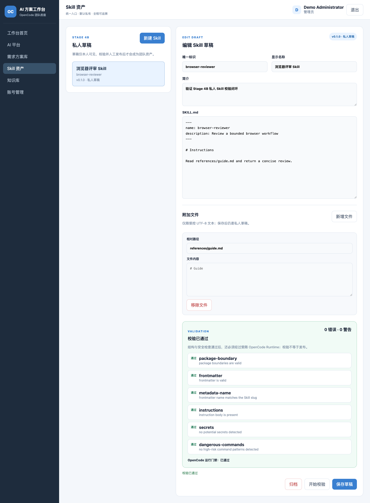
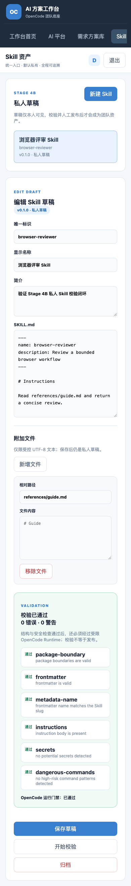

247 / 250
默认测试通过；3 项真实破坏性或模型验收按设计跳过。
OpenCode Team Workbench · Stage 4B
Mac 验收通过成员可以维护受控文件包、查看结构与安全报告，并让共享 OpenCode Gateway 在隔离目录中真实发现和加载 Skill。校验通过仍保持私有，发布必须进入下一阶段人工确认。
默认测试通过；3 项真实破坏性或模型验收按设计跳过。
真实 OpenCode 版本；目标 Skill 工具完成并返回非空加载结果。
全量测试、Vite build、语法、密钥扫描和 diff 检查通过；桌面与手机浏览器无页面错误、无文档级横向溢出。


本阶段不发布、不安装、不启用 Skill，也不等同于 Linux 生产就绪。下一阶段是 4C：人工发布、成员安装与启用、原子落盘和 OpenCode 团队发现。